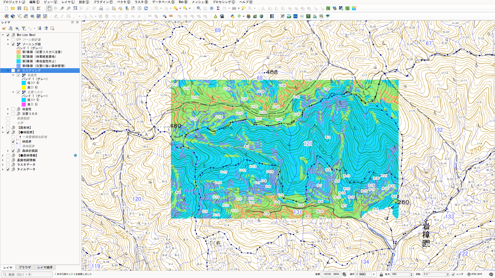
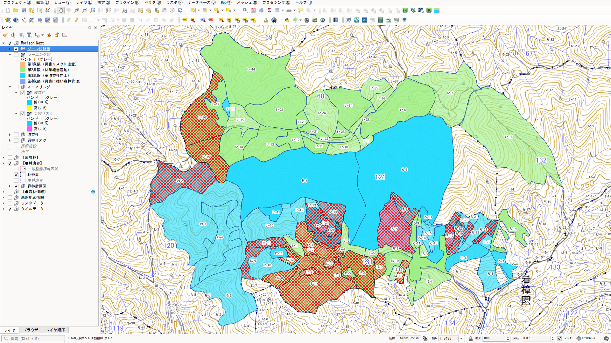

MORIZON NEXT 操作マニュアル
収益性と災害リスクから森林をゾーニングする QGIS プラグイン
Morizon Next の位置づけ
- Morizon Next は個人が開発したプラグインです。林野庁、日本森林技術協会、原版の開発者による公式のものではありません。必要とする方に使っていただけるよう公開しています。
- 解析のロジックは原版を受け継いでいます。結果の扱いは、利用者ご自身の判断と責任でお願いします。
- 手引に基づく正統なツールは、原版のもりぞんです。原版が使える環境では、原版をお使いください。
オリジナル MORIZON が QGIS 4.x に対応する日を心待ちにしています。
「もりぞん」は、入力データを用意すれば、GIS の各種機能を使ったマップの作成を自動で行うことができます。しかしながら、しきい値設定の段階は地域の合意形成による意思決定が必要であり、決して自動化することはできません。
本プラグインは、マップ作成の労力を軽減し、合意形成により注力するための道具として活用してください。ゾーニングにおいて重要なのは合意形成の過程なのです。
出典：林野庁「収益性と災害リスクを考慮した森林ゾーニングの手引き 森林ゾーニング支援ツール「もりぞん」【改訂版】操作マニュアル」（令和8年3月、作成：一般社団法人 日本森林技術協会）p.42 より引用
はじめに
MORIZON NEXT は、林野庁の森林ゾーニング支援ツール「もりぞん（MORIZON）」を改良したプラグインです。ゾーニングの考え方と計算方法は原版をそのまま受け継いでいます。改良したのは、解析に必要なオープンデータをプラグインが自動で取得するようにした点です。
原版では、解析に入る前に、DEM の変換・結合、建物や道路のダウンロードと座標変換、作業システム表の Excel 編集などをすべて手作業で行う必要がありました。MORIZON NEXT では、QGIS の地図で範囲を表示してボタンを押せば、これらのデータがそろいます。
このマニュアルは、原版の「収益性と災害リスクを考慮した森林ゾーニングの手引き」（令和8年3月、以下「手引」）を置き換えるものではありません。操作に必要なことと、判断に必要な考え方に絞って書いています。詳しい背景を知りたいところには、手引の該当ページを p.00 の形で示しました。
最初の章はデータの準備です。データごとに「なぜこのデータが必要なのか」を説明しながら進めるので、読み終えるころには、この解析が何を計算しているのかもつかめるはずです。
まずは既定の設定のまま、最後まで一度通してみてください。次の手順だけで、ゾーニング図とゾーン統計量まで出力できます。しきい値や設定は、結果を見てから見直せば十分です。


- 範囲を決めるQGIS プロジェクトを保存する
地図に対象地を一回り広く表示する - データを自動取得「DEMブラウザから開始する」
※ダウンロード時間が必要です
※国土地理院アカウント必須 - 作業システムを反映「CSVとして反映する」手動
- タブの順に実行※ゾーン統計量手動設定あり
1. データの準備
1.1 何のためのデータか
最終的に作るのは、森林を次の4つに色分けしたゾーニング図です。
| 災害リスクが低い | 災害リスクが高い | |
|---|---|---|
| 収益性が高い | 林業に向いている | 収益は見込めるが、施業に配慮が必要 |
| 収益性が低い | 災害の心配は少ないが、収益は見込みにくい | 林業生産には向かない |
「収益性」と「災害リスク」は、それぞれ3つの要素の点数（1〜3点）を合計して求めます。要素は全部で6つです。
| 軸 | 要素 | 何を表すか | 元になるデータ |
|---|---|---|---|
| 収益性 | 地位 | その土地で木がどれだけよく育つか | 地位データ（NPP・SRAD・VTEX） |
| 収益性 | 集材作業効率 | その地形で使える機械と作業のしやすさ | DEM ＋ 作業システム |
| 収益性 | 地利 | 道からの近さ（運び出しやすさ） | 道路 ＋ DEM |
| 災害リスク | 傾斜 | 斜面の急さ | DEM |
| 災害リスク | 地形の複雑さ | 尾根や谷の入り組み具合（崩れやすさの目安） | DEM |
| 災害リスク | 保全対象を含む流域 | 崩れたとき、下流に人家があるか | DEM ＋ 建物 |
ここから2つのことがわかります。
- 用意するデータは5種類だけです。DEM、地位データ、建物、道路、作業システムです。
- DEM は6つの要素すべてに関わります。DEM の質と範囲が、結果全体の質を決めます。
1.2 解析の準備：範囲と保存場所を決める
QGIS プロジェクトを先に保存する
自動取得したデータは、QGIS プロジェクトファイルがあるフォルダ（Project/morizon_next）に構成されて保存されます。複数の QGIS プロジェクトを置いても、プロジェクトごとに分かれます。データを取得・保存するにはプロジェクトが保存されている必要があります。必要があれば案内が出ます。
取得が終わると、フォルダの中は次のようになります。
(プロジェクトフォルダ)/
├─ ○○.qgz … QGIS プロジェクト
└─ morizon_next/
├─ ○○/ … プロジェクト内の作業フォルダ（プロジェクトのファイル名）
│ ├─ DATA/ … 入力データ
│ │ ├─ DEM/ dem_fetched.tif
│ │ ├─ SiteIndex/
│ │ │ ├─ NPP/ npp_clipped.tif
│ │ │ ├─ SRAD/ srad_clipped.tif
│ │ │ └─ VTEX/ vtex_clipped.tif
│ │ ├─ TATEMONO/ building.shp
│ │ ├─ ROAD/ road_edge.shp
│ │ └─ SAGYO-SYSTEM_CSV/ costcsv.csv
│ ├─ YOUSO/ … 要素計算の出力
│ ├─ ZONING/ … 収益性・災害リスク・ゾーニング図の出力
│ └─ AGGREGATE/ … ゾーン統計量の出力
├─ shared/ … 再取得を省くための控え（同じフォルダのプロジェクトで共有。触らなくてよい）
└─ archive/ … 保存ファイル（ZIP）
構成は地域データ「ZoningKit xx」とプラグインが使用する AGGREGATE を追加したものです。また共有データ、保存ディレクトリ shared/ archive/ が作成されます。
QGIS プロジェクトでは一つの解析を行います。保存したデータは読み込めますが、一度にプラグインが扱う Morizon Next 解析は一つです。
1.3 自動で取得するデータ
「DEMブラウザから開始する」を押すと、次の3種類のデータを順に自動で取得します。それぞれの意味と注意点は、次の節から説明します。
| データ | 取得元 | 取得する範囲 | 2回目以降 |
|---|---|---|---|
| DEM（標高） （1.4） | 国土地理院（地理院タイル）。静岡県・長野県では県の高解像度 DEM も選べる | 地図に表示している範囲 | 取得のたびにダウンロードする |
| 地位データ （1.5） | ZoningKit（G空間情報センター） | 座標系の地域全体をダウンロードし、表示範囲を切り出す | 地域ごとに初回だけダウンロードし、以降は共有データ（morizon_next/shared）を使う |
| 建物・道路縁 （1.6・1.7） | 国土地理院 基盤地図情報（利用者登録とログインが必要） | 表示範囲の周りに地図1区画分を足した範囲 | 取得済みのファイルは使い回す。同じ範囲なら、まとめ直しも省く |
作業システム（1.8）は取得するものではなく、プラグインの画面で設定します。
取得について
- DEM国土地理院などから選択
- 地位データ初回は、地域全体（数百 MB）のダウンロード
- 建物・道路縁SHP国土地理院 基盤地図情報
（利用者登録とログインが必要）
1.4 DEM（標高）
操作DEM を取得する ─ 「DEMブラウザから開始する」を押す
範囲は「QGIS の地図に表示している範囲」
「DEMブラウザから開始する」を押すと、その時点で QGIS の地図に表示されている範囲がデータの取得範囲になります。計画図や市町村界などのレイヤを表示し、対象地が画面に収まるように拡大・縮小してから始めてください。
・地形がすべての出発点になります。DEM から次のものを計算します。
- 傾斜：急な斜面ほど崩れやすく、作業もしにくくなります。
- 地形の複雑さ：尾根と谷が細かく入り組んだ場所は、侵食が進んでいて崩れやすい傾向があります。
- 起伏量：周囲の最高点と最低点の差です。傾斜と組み合わせて、使える作業システムを決めます。
- 流域：雨水や崩れた土砂がどこへ流れ下るかを求めます。
- 道路や地位データと合わせて集材条件、災害リスクの判定に利用します。
取得される DEM の解像度と座標系設定は、自動化されています。国土地理院の DEM には 1m、5m、10m（※「国土地理院 DEM1A/5A/10B」）があり表示範囲の全体を同じ解像度でカバーできるものを選択肢として表示します。取得した DEM は、その地域の平面直角座標系で保存します。
詳しい解説
なぜ解像度を混ぜないのか
解像度が違うデータをつなぎ合わせると、つなぎ目で傾斜や地形の複雑さの値が不自然に変わり、実際にはない「境界線」がゾーニング図に現れてしまいます。なぜ座標系を変換するのか
Web 地図のタイルは、そのままでは 1m が実際の 1m になりません（北へ行くほどずれます）。変換しないと傾斜が数度緩く出て、道からの距離や面積も実際と違ってしまいます。「35度」「400m」といったしきい値を地域で話し合って決める以上、値は実際の長さ・角度で計算されている必要があります。なぜ対象地より一回り広く表示するのか
いくつかの要素は、そのセルの周りの地形を使って計算します。- 起伏量と地形の複雑さは、周囲約 490m 四方の標高を使います。
- 保全対象を含む流域は、水が流れ下る先まで追いかけて計算します。
- 地利は、範囲の外にある道のほうが近いこともあります。
広さと解像度の目安
手引が想定しているのは、市町村全域を 10m 解像度で解析する使い方です。
- 解析の広さに合わせて自動調整されます。
- 5m の DEM は、解析のときに自動で 10m に変換されます。
- 1m の DEM は、およそ 5km 四方程度を超えると 10m に変換されます。1m のまま解析できるのは、施業団地程度の狭い範囲に限られます。
1.5 地位データ（NPP・SRAD・VTEX）
操作地位データを取得する ─ 自動（操作不要）
- 取得元は、林野庁がもりぞん用に公開している「ZoningKit」（G空間情報センター）です。登録は不要です。
- 表示範囲の中心がどの座標系の地域にあるかを判定し、必要な部分だけを取り出します。
- 一度取得した地域のデータは共有データ（morizon_next/shared）に保存されます。同じフォルダのプロジェクトでは、その地域のダウンロードを省きます。
- 既存の ZoningKit（例：ZoningKit_08）がある場合は、展開したフォルダを「フォルダ選択から開始する」で選ぶと、キット内の地位データを共有データにコピーします。以降は、その地域のダウンロードを省きます。
ただし、全域の樹高を実際に測ることはできません。そこで、全国の森林調査データから作られた推定式を使い、次の3つのデータからスギ・ヒノキ・カラマツの地位指数を計算します。
- NPP（純一次生産力）：気候から見た、植物が育つ力
- SRAD（日射係数）：斜面の向きや地形による日当たり
- VTEX（凹凸度）：谷か尾根か。谷は水が集まり、木がよく育つ傾向があります
1.6 建物（保全対象）
操作建物を取得する ─ 確認で「はい」を選び、基盤地図情報にログイン
国土地理院の基盤地図情報「建築物の外周線」を取得し、DEM と同じ座標系で保存します。
そこでこの解析では、DEM から流域（雨水が同じところへ集まる範囲）を求め、その中に建物があるかどうかで点数を付けます。これが「保全対象を含む流域」です。
地域の保全対象を反映する場合は、独自の建物データの作成をおすすめします。作業フォルダの建物データに描き足して計算し直す手順は「2.2 高度な使い方」で説明します。
公式の手引：収益性と災害リスクを考慮した森林ゾーニングの手引き（令和8年3月） 参照ページ：p.23〜24/p.75
- 対象にしているのは建物だけです。道路、鉄道、農地、取水施設など、ほかの保全対象は含まれません。
- 「流域に建物があるか」を見ているだけで、土石流が実際に届くかどうかは計算していません。
- 流域は約 5ha 以上のまとまりで区切っています。
1.7 道路
操作道路縁を取得する ─ 建物と同時に自動（1.6）
実際の林道・作業道を反映する場合は、独自の道路データの作成をおすすめします。作業フォルダの道路データに林道・作業道を描き足して計算し直す手順は「2.2 高度な使い方」で説明します。
公式の手引：収益性と災害リスクを考慮した森林ゾーニングの手引き（令和8年3月） 参照ページ：p.42〜43/p.71〜72
- 林道や森林作業道は十分に含まれていません。山の中では、実際より道から遠く計算されがちです。手引でも、林道データは自分で用意するデータとされています。
- 逆に、高速道路や国道など、搬出には使えない道も含まれています。
- 距離は地図上の直線距離です。傾斜や、川を渡れないことは考慮していません。
1.8 作業システム
操作作業システムを反映する ─ 「作業システム設定」の「CSVとして反映する」を押す
- 色分布パネル（右）：横軸が傾斜、縦軸が起伏量です。色が、その地形に割り当てる機械を表します。
- 機材名の一覧（左）：色と機械の対応です。数字が大きい機械ほど作業効率が高い扱いになります。リストの凡例と色分布パネルは連携しています。凡例をクリックすると「保有していない機械」としての扱いになり、色分布パネルでその機械が割り当てられていた範囲は「該当なし」（最も効率が低い）になります。
- マージン：プラス側にすると、斜面を実際より最大3度緩いものとみなし、同じ地形でもより効率のよい機械を割り当てます（強気）。マイナス側はその逆（慎重）です。緩斜面と、機械の限界を超える急斜面の割り当ては動きません。
- 「CSVとして反映する」を押すと、作業フォルダの DATA/SAGYO-SYSTEM_CSV/costcsv.csv に保存され、作業システムCSV 欄に自動で設定されます。
Excel のひな形でマスごとに決める場合
- 「Excelシートを開く」ひな形を DATA/SAGYO-SYSTEM_CSV に置いて開く
（置いてあればそれを開く） - 「入力」シートを編集ひな形の説明どおりに編集し、上書き保存
（CSV での保存は不要） - 表示を確かめる保存した内容が、パネルと一覧に表示される
- 「CSVとして反映する」押して反映する
この対応表は、5種類のデータの中で唯一、地域の人が判断して決めるものです。地域で実際に使われている機械と合っていなければ、集材作業効率は現実とずれます。
素材生産事業体の意見を聞きながら決めるのが理想です。まずは初期値のまま解析を一度通し、結果を見てから調整しても構いません。
1.9 自分でデータを用意する場合
航空レーザの DEM、独自の地位指数、林道データなど、手元により良いデータがあれば、各入力欄の右端「…」から個別に指定できます。
守ってほしいこと
- DEM は平面直角座標系（単位 m）の GeoTIFF にしてください。ほかのデータはすべて DEM の座標系に合わせて変換されるため、DEM の座標系が解析全体の基準になります。緯度経度や Web メルカトルの DEM では、傾斜・距離・面積が正しく計算されません。
- DEM に穴を開けないでください。民有林だけ、5条森林だけといった切り抜き方をした DEM は縁が多くなり、流域などが正しく計算できません。対象地より広い範囲を、隙間なく覆ってください。
- 海や湖の標高値は取り除いてください。水面の平らな値が、傾斜などの統計を歪めます。
- 建物と道路は Shapefile（.shp）で指定します。座標系が DEM と違っても自動で変換されます。
林道データを道路に加える
既設路網ライン欄に指定できるのは1ファイルだけです。基盤地図情報の道路縁と林道データを両方使うときは、先に QGIS で1つにまとめます。
- QGIS メニュー「ベクタ」→「データ管理ツール」→「ベクタレイヤのマージ」を開きます。
- road_edge.shp と林道データを選び、出力先の座標系には DEM と同じものを指定して、Shapefile として保存します。
- 保存したファイルを既設路網ライン欄に指定します。
フォルダ選択から開始する
原版の ZoningKit のフォルダ（またはその中の DATA フォルダ）や、MORIZON NEXT の作業フォルダ（morizon_next/○○）を選ぶと、DATA の中のサブフォルダ（DEM、SiteIndex/NPP など）から入力ファイルをまとめて設定します。ファイルはコピーせず、選んだ場所のものをそのまま使い、出力もそのフォルダの YOUSO・ZONING・AGGREGATE に書き込みます（作業フォルダ：外部）。開始する前に、使うファイルの一覧を確認できます。選んだフォルダに出力（YOUSO・ZONING・AGGREGATE のファイル）がある場合は、途中まで進んだフォルダとして読み込み、出力をレイヤーに反映します。入力欄の「…」でファイルを個別に選んだ場合は、作業フォルダの DATA にコピーして使います。作業フォルダは QGIS プロジェクトに記録されるので、プロジェクトを保存して開き直すと「再開しますか？」と確認し、同じフォルダで続きから作業できます（「設定をクリアする」では初期状態、作業フォルダ：なし に戻ります）。
1.10 実行前の確認
各入力欄の右端に状態が表示されます。
- 設定済：ファイルが指定されています。
- 未設定：計算にチェックが入った要素に必要なのに、まだ指定されていません。
- 任意：チェックが外れた要素だけに使うので、なくても実行できます。
「計算する要素を選択」のチェックは、必要なデータが揃った要素だけ選べるようになり、揃った時点で自動的にチェックが入ります。
- DEM は対象地より広く、穴がないか
- 地位データ・建物・道路が「設定済」になっているか
- 作業システムは地域の機械に合わせたか（初期値のままでもよいが、そのことを覚えておく）
- 林道データを加えるかどうか決めたか
- 作業フォルダが「なし」になっていないか（出力先は作業フォルダの中に決まります）
すべて揃うと「実行」ボタンが押せるようになります。操作の続きは「2.1 要素計算」で説明します。
1.11 出典と利用条件
自動取得するデータの出典は次のとおりです。成果を資料にするときは出典を明記してください。
| データ | 出典 |
|---|---|
| DEM | 国土地理院（地理院タイル 標高タイル DEM1A / DEM5A / DEM10B） |
| DEM（静岡県内で選択時） | 静岡県「VIRTUAL SHIZUOKA」航空レーザ測量データ LP/Grid（G空間情報センター、CC BY 4.0） |
| DEM（長野県内で選択時） | 長野県建設部砂防課 航空レーザ測量成果 0.5mメッシュDEM（令和3〜7年度）、長野県林務部 航空レーザ測量成果 0.5mメッシュDEM（2013〜2014年度）（いずれも G空間情報センター） |
| 建物・道路縁 | 国土地理院 基盤地図情報（建築物の外周線、道路縁） |
| NPP・SRAD・VTEX | 林野庁「森林ゾーニング支援ツール もりぞん」ZoningKit（G空間情報センター）。地位指数の推定式は光田靖・北原文章（2017）による |
| DEM（予備） | AWS Terrain Tiles（Mapzen Terrarium） |
ゾーニング図を印刷して配布する場合など、使い方によっては国土地理院への利用手続きが必要になることがあります。事前に国土地理院の案内で確認することをお勧めします。
2. 操作
解析は、タブの並びのとおり 要素計算 → スコアリング → ゾーニング → ゾーン統計量 → 印刷 の順に進めます。前の工程の結果を次の工程が使うので、途中の工程をやり直したときは、その先の工程もやり直します。
実行順序
- 要素計算要素レイヤーを生成
- スコアリング要素を点数に分ける
- ゾーニング点数で区分
- ゾーン統計量結果
2.1 要素計算
- 収益性地位（スギ・ヒノキ・カラマツ）、集材作業効率、地利
- 災害リスク地形の複雑さ、傾斜、保全対象を含む流域
- 「計算する要素を選択」で、計算する要素にチェックを入れます。必要なデータが揃った要素だけ選べます（1.10）。最初は全部を計算します。
- 「乗算出力を適用する」は、通常はオンのままにします。出力のレイヤーを乗算で重ねるので、上のレイヤーが下を隠さず、要素を重ねて見比べられます。表示が重いときはオフにできます。
- 「実行」を押します。処理の窓に進み具合が表示されます。「中断」を押すと、それまでに計算できた要素だけをレイヤーに出して止まります。
出力
計算結果は、作業フォルダの YOUSO に保存され、レイヤーパネルの「Morizon Next」グループにまとめて表示されます。
- 「収益性」と「災害リスク」の下に、要素ごとのグループができます。各グループには、計算した値そのもの（生データ）と、点数に分けたもの（名前の末尾が「[スコアリング]」）の2つのレイヤーが入ります。
- 最初は各グループの表示がオフです。見たいグループのチェックを入れると表示されます。地利だけは、最初に点数の方が表示されます。
- 「収益性」の要素どうしは、1つを表示すると他が消えます（同時に1つだけ表示）。「災害リスク」の要素は、傾斜の上に地形の複雑さや保全対象を含む流域を重ねて見られるよう、同時に表示できます。
作業フォルダの行のボタン
「出力先フォルダ」の上の行に、今の作業フォルダ（なし・プロジェクト内・外部）が表示されます。その右のボタンは次のとおりです。
- 道路と建物を出力：取得・読み込みした道路縁と建築物を、「Morizon Next」グループの「災害リスク」の下の「道路・建物」グループに表示します。要素計算の入力に使っている道路と建物を、地図で確かめるときに使います。
- 作業フォルダを開く：作業フォルダを、パソコンのファイル管理の画面で開きます。
2.2 高度な使い方：道路・建物を編集して計算し直す
- 要素計算を一度実行し、結果を確かめます。
- 「作業フォルダを開く」で作業フォルダを開き、DATA/ROAD の道路のファイル（自動取得なら road_edge.shp）を QGIS に読み込みます。建物なら DATA/TATEMONO のファイルです。
- 読み込んだレイヤーを編集します。計画路網を線で描き足す、使えない道を削る、などです。編集が終わったら保存して編集を終えます。
- 「道路と建物を出力」を押します。編集が見つかると、表示が新しい内容に更新され、「要素計算をもう一度実行してください」と案内されます。
- 要素計算をもう一度実行します。道路を編集したなら「地利」、建物を編集したなら「保全対象を含む流域」だけを選べば足ります。
- 要素が変わったので、スコアリング・ゾーニング・ゾーン統計量も、この順にやり直します。
- 要素計算が使うのは、作業フォルダの DATA/ROAD・DATA/TATEMONO にあるファイルです。「道路・建物」グループに表示されるレイヤーは確認用の表示なので、こちらを編集しても計算には反映されません。
- ファイルの名前と場所は変えずに、上書きで保存してください。別の名前で保存した場合は、要素計算タブの入力欄でそのファイルを指定し直します。
- 編集中のまま保存していないと、変更はファイルに書き込まれていないので反映されません。
- 前回と同じ範囲なら、「編集しているデータを使いますか？」と聞かれます。「はい」なら編集したデータをそのまま使い、取得しません。「いいえ」なら、編集したデータを同じフォルダの backup フォルダに日時付きの名前で残してから、取得し直します。
- 前回と違う範囲なら、編集したデータを backup フォルダに残してから、新しい範囲で取得し直します。残した場所は画面で知らせます。
- 編集していなければ、前回と同じ範囲で取得し直したときは、取得済みのデータをそのまま使います（まとめ直さないので早く終わります）。
2.3 スコアリング以降
準備中：スコアリング・ゾーニング・ゾーン統計量・印刷の操作
3. パラメータとしきい値
準備中
4. 凡例の見方
準備中
5. 結果の使い方と注意点
準備中
付録 手引との対応表
準備中
不具合報告
GitHub Issues で受け付けています。個人で開発しているため、すべての報告に対応できるとは限りません。
不具合は、使う環境や設定によって起きることが多く、同じ環境を用意しないと確かめられません。対応を検討するには、次の情報が必要です。
- QGIS のバージョンと OS
- MORIZON NEXT のバージョン
- 操作の手順（どの画面で何をしたか）
- エラーメッセージ（QGIS の「ログメッセージ」パネルの内容）
- 使ったデータの種類（自動取得か、手持ちのデータか）
- 追加している QGIS プラグインの一覧
- 追加した Python ライブラリ。自分で入れたものと、プラグインの機能で自動的に入ったものの両方を書いてください
- 上記の追加プラグインとライブラリを外し、動作要件に書いたものだけの環境で試した結果
頂いた情報で再現しない、判断ができない報告には対応ができないことがあります。